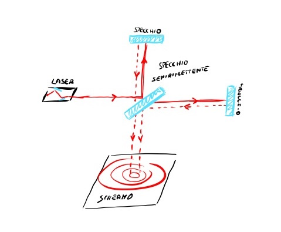

Laboratory story · OpticsStoria di laboratorio · Ottica
Coherence of a He-Ne laserCoerenza di un laser He-Ne
Measuring the coherence of laser light through interference.
Misurare la coerenza della luce laser attraverso l’interferenza.

This experiment studies the coherence of laser light produced by a helium-neon active medium using a Michelson interferometer.
The Michelson interferometer uses a beam splitter and two mirrors to divide the laser beam into two separate paths. At its output, a screen shows the interference pattern created when the beams recombine.
The physics of the experiment
The laser mechanism relies on the stimulated emission of photons. A photon is the quantum, particle-like description of light; through wave-particle duality, light can also be described as an electromagnetic wave.
Spontaneously emitted photons have random phases. Without a stable phase relationship, the resulting light is not coherent.
From emission to coherence
A Fabry-Pérot cavity surrounds the active medium. The light repeatedly travels between two mirrors, selecting resonant modes and turning the initially stochastic emission process into a highly coherent beam.
The coherent light is then sent into the Michelson interferometer. Circular fringes appear on the screen, and their intensity is measured with an oscilloscope. These measurements allow the degree of coherence of the laser light to be estimated.
Attraverso questo esperimento si è studiata la coerenza della luce laser generata da un mezzo attivo a elio-neon mediante un interferometro di Michelson.
L’interferometro di Michelson usa uno specchio semiriflettente e due specchi per dividere il raggio laser in due percorsi distinti. All’uscita, uno schermo mostra la figura d’interferenza prodotta dalla ricombinazione dei fasci.
La fisica dell’esperimento
Alla base del meccanismo laser c’è l’emissione stimolata di fotoni. Il fotone è l’interpretazione quantistica, o corpuscolare, della luce; in virtù del dualismo onda-particella, la luce può essere descritta anche come un’onda elettromagnetica.
I fotoni emessi spontaneamente hanno fasi casuali. Senza una relazione di fase stabile, la luce risultante non è coerente.
Dall’emissione alla coerenza
Il mezzo attivo è inserito in una cavità Fabry-Pérot. La luce rimbalza ripetutamente tra due specchi, selezionando i modi risonanti e trasformando il processo inizialmente stocastico di emissione in un fascio altamente coerente.
La luce coerente viene quindi immessa nell’interferometro di Michelson. Sullo schermo compaiono le caratteristiche frange circolari, la cui intensità viene misurata attraverso un oscilloscopio. Da queste misure si può ricavare il grado di coerenza della luce laser.
Read the full reportLeggi la relazione completaThree pages with theory, experimental method and results.Tre pagine con teoria, metodo sperimentale e risultati.
Open PDFApri il PDF